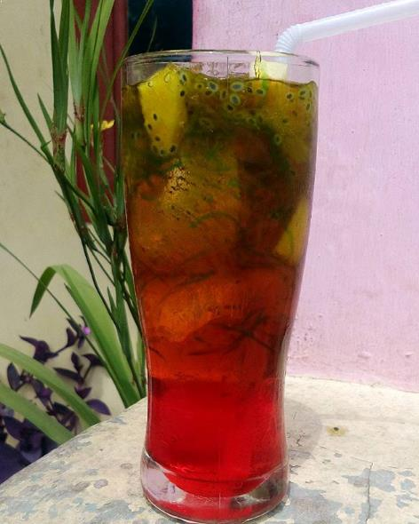
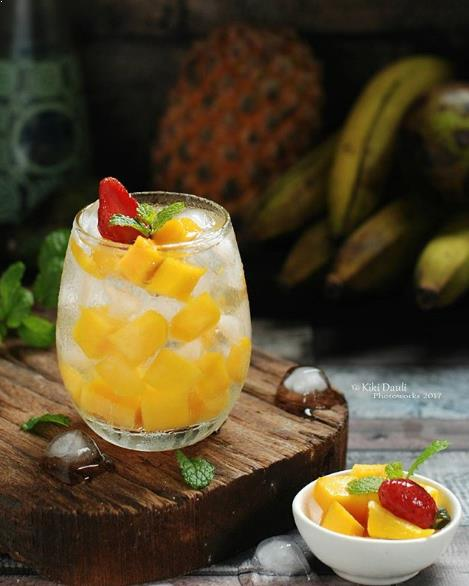
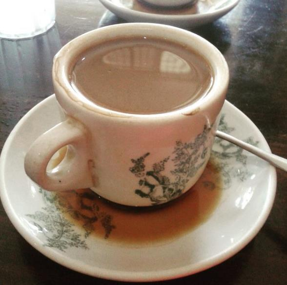
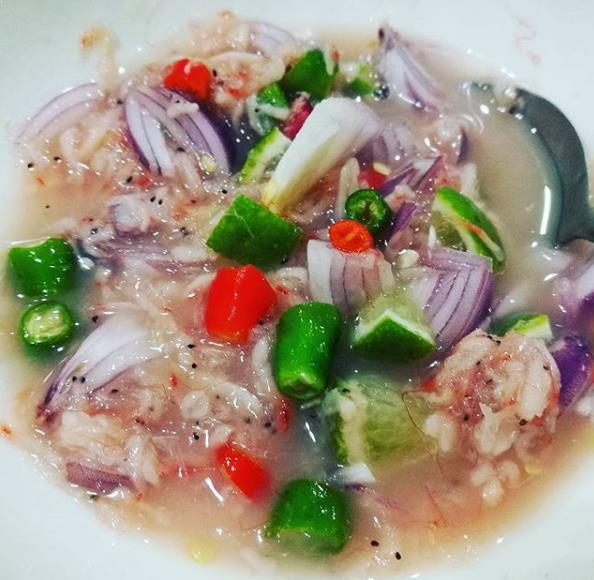
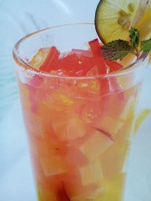

Makanan dan minuman khas Riau ini namanya unik ya. Es air mata pengantin dulunya hanya disajikan saat ada perayaan acara kebahagiaan seperti pernikahan. Karena es ini disajikan ditengah orang-orang yang berbahagia, maka dinamakan es air mata pengantin. Es air mata pengantin ini rasanya segar dan nikmat. Dalam segelas es air mata pengantin, berisi biji selasih, blewah, es batu serut dan sirup.

Berikutnya ada es laksanana mengamuk. Makanan khas Riau dan sejarahnya ini cukup terkenal dan konon katanya dulu ada seorang laksamana yang mengamuk di sebuah kebun kuwini atau sejenis buah mangga dengan daging yang lembut dan aromanya harum karena istrinya telah dibawa kabur. Untuk melampiaskan emosinya, sang laksamana kemudian menghempaskan pedangnya ke segala penjuru hingga banyak buah kuwini yang jatuh dan juga rusak. Setelah itu para warga mengumpulkan buah yang jatuh untuk diolah dengan santan dan gula, hingga jadilah minuman bernama es laksamana mengamuk ini. Es ini memiliki cita rasa manis dan legit.

Kopi hawai bisa kamu temui di sebuah kedai kopi yang terletak di daerah Kijang Bintan. Konon katanya, kopi disini diolah dengan cara yang berbeda dari kopi lainnya. Bagi kamu pecinta kopi, wajib datang kesini untuk mencicipi dan melihat cara mengolah kopi ini.

Cencaluk terbuat dari udang yang sudah dihaluskan dan biasanya disajikan pada acara-acara tertentu saja. Cencaluk merupakan masakan tradisional Melayu yang masih eksis hingga sekarang.

Es sirup mak inang merupakan minuman yang terdiri dari campuran air dan potongan buah nanas yang diolah dengan cara dimasak hingga mendidih. Setelah itu ditambah potongan buah apel dan agar-agar. Agar lebih nikmat tambahkan juga sirup jeruk koprok, selasih, gula, dan tentunya es batu.
Yang Mau Tau Makanan dan Minuman Paling Diminati Orang Riau , Yuk cek disini